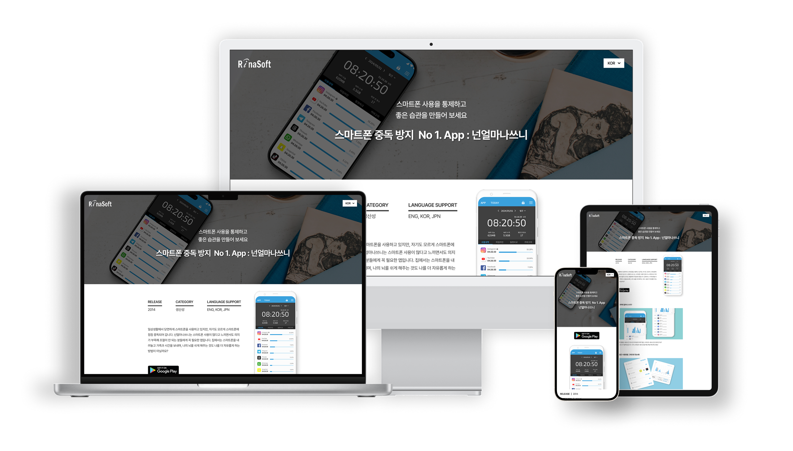
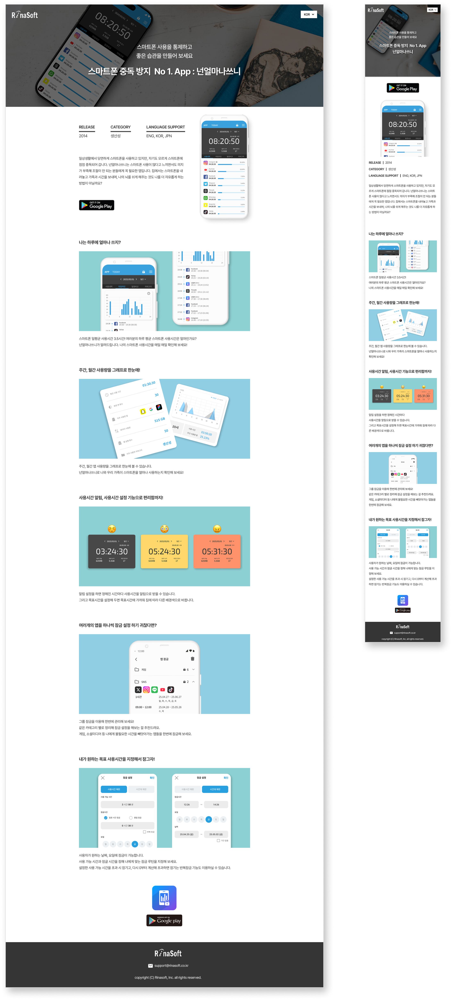
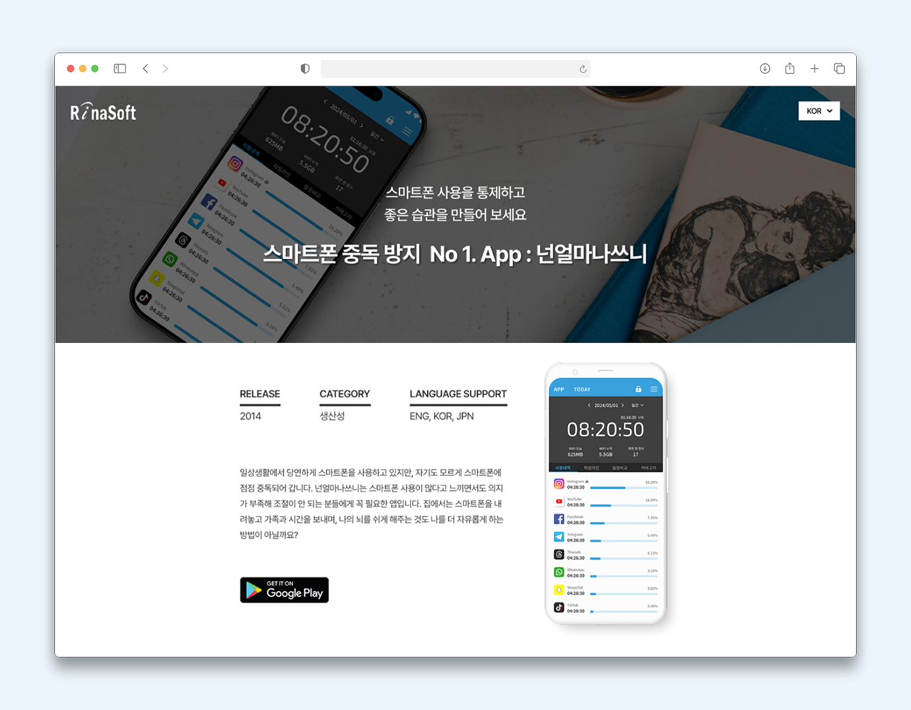
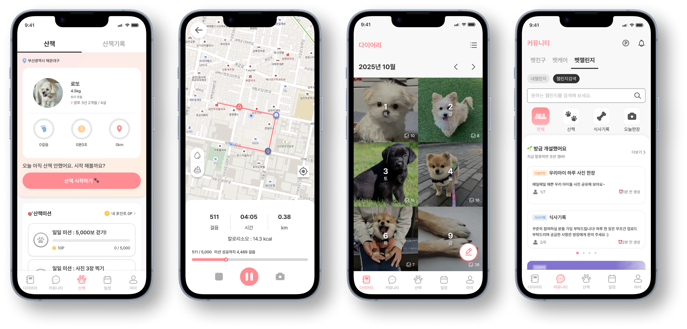
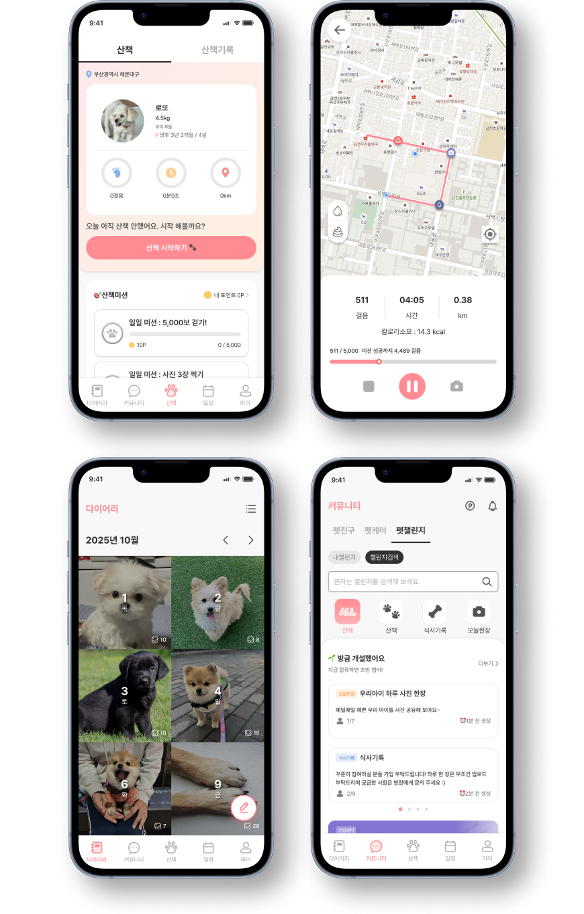
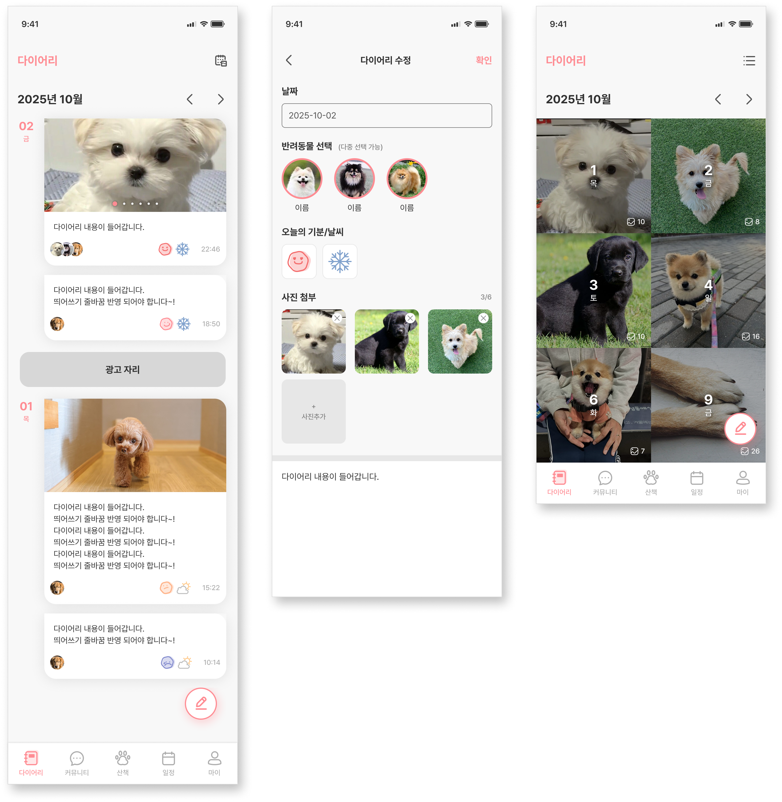
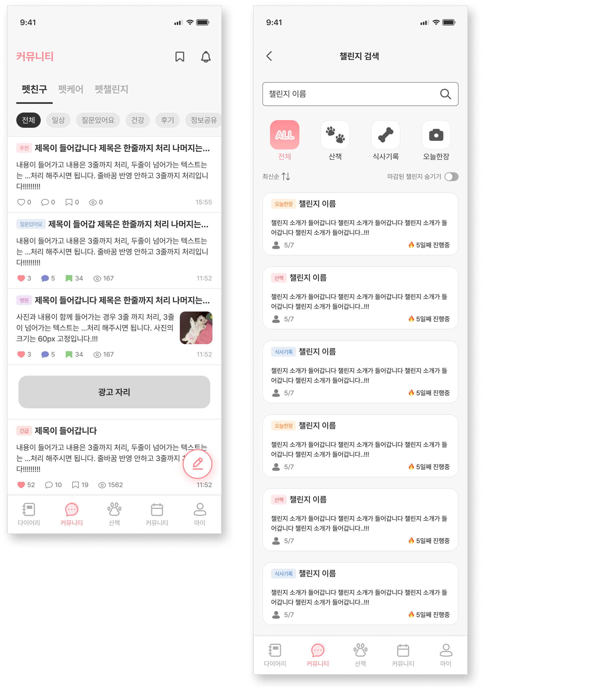
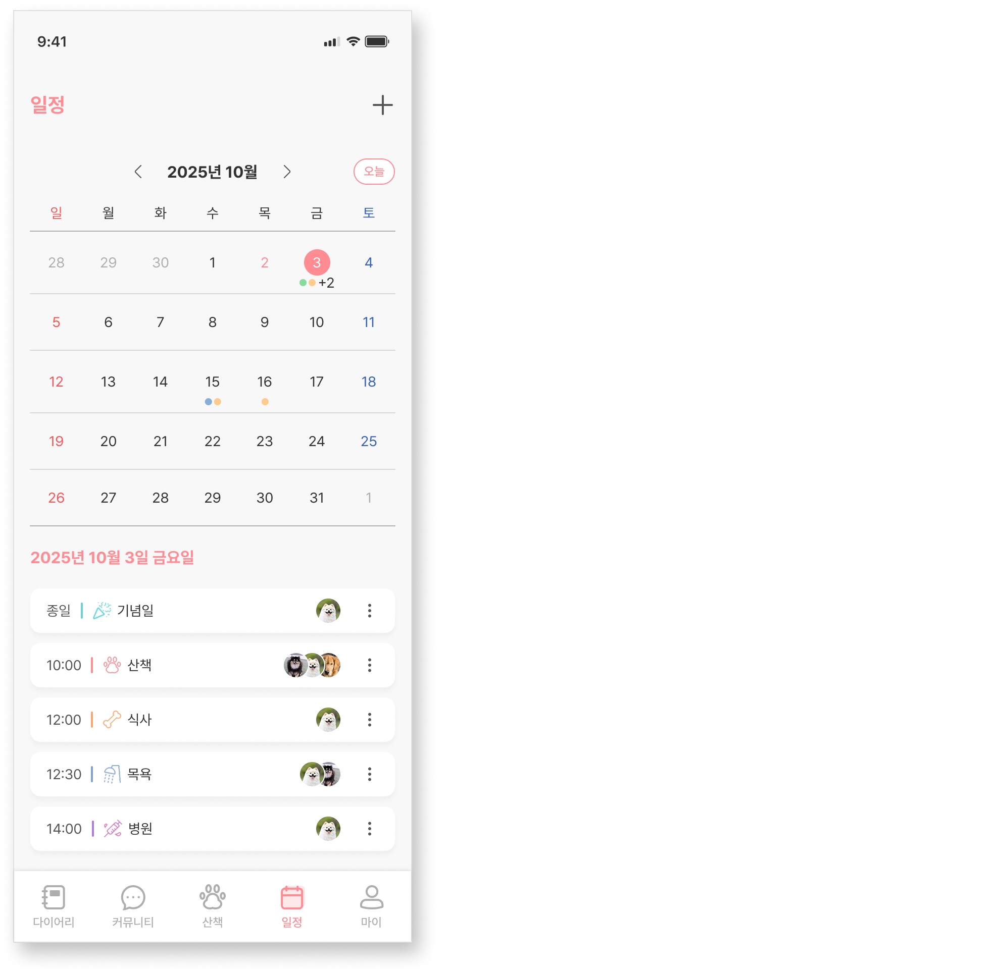

넌얼마나쓰니의 브랜드와 주요 기능을 담은 반응형 웹사이트 디자인
퍼블리싱 | HTML · CSS · JS 100% | 제작 기간 1일

기획 · 설계
100%UI/UX 디자인
100%웹 퍼블리싱
100%기능 개발
80%

앱 내에서 제공되는 서비스 기능을 웹뷰 화면으로 구현한
프로젝트입니다.
기획된 UI 디자인을 바탕으로 모바일 환경에 적합한 레이아웃과 일관된
화면 표현에 중점을 두었습니다.
퍼블리싱 | HTML · CSS 100% | 제작 기간 2개월




